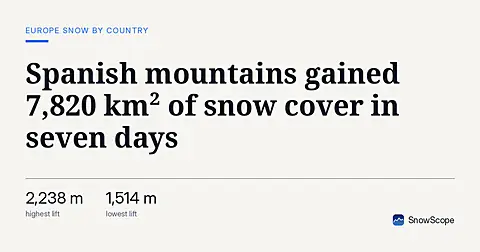
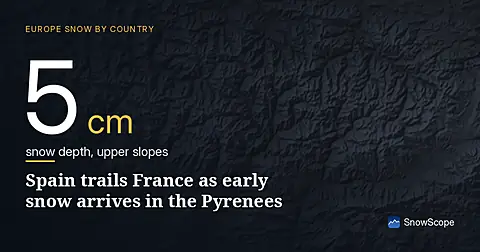

Spain snow report: snow depth, new snow and the week ahead
In Spain about 8,540 km² of high ground is white today, 4 % of the country's mapped mountains and hills. That is 2,570 km² less than yesterday. The deepest resort is Candanchu with 39 cm on its upper slopes. Little or no new snow is expected in the week ahead.
See the live snow forecast for Candanchu in the SnowScope appSnow depth, powder alerts and the 3D map, free.Today at a glance
| White area | 8,540 km² |
|---|---|
| Share of the high ground | 4 % |
| Most new snow in 24 h | 0 cm |
| Most new snow in 3 days | 16 cm |
| Next 3 days (snowiest slopes) | 1 cm |
| Next 7 days | 1 cm |
| Resorts with snow on top | 26 of 31 |
The last seven days
On 21 November about 540 km² was white; today it is 8,540 km².
The snow cover grew by 8,000 km² over these days.
The biggest three-day snowfall of the period reached 19 cm (to 26 November).
This season against a normal year
3 of the 4 deepest resorts are above their usual snow depth for 27 November.
Candanchu: 23 cm at about 1,876 m, a normal year has 11 cm; Formigal: 19 cm at about 1,883 m, a normal year has 14 cm; Panticosa: 17 cm at about 1,678 m, a normal year has 4 cm; Espot: 5 cm at about 1,900 m, a normal year has 8 cm.
These depths are for one height on each mountain, below the top.
In past winters the best snow at Candanchu usually came late February / early March.
Snowiest resorts today
Candanchu leads with 39 cm on its upper slopes.
Then come Formigal (36 cm), Panticosa (31 cm), Javalambre (28 cm) and Espot (23 cm).
| Resort | Upper slopes | New, 3 days | Next 3 days | Top |
|---|---|---|---|---|
| Candanchu | 39 cm | 37 cm | 2 cm | 2,238 m |
| Formigal | 36 cm | 34 cm | 2 cm | 2,264 m |
| Panticosa | 31 cm | 25 cm | 2 cm | 2,202 m |
| Javalambre | 28 cm | 1 cm | 0 cm | 2,004 m |
| Espot | 23 cm | 15 cm | 1 cm | 2,290 m |
Where the snow is coming next
The first flakes are expected around Sunday 29 November.
The last three days brought the most fresh snow to the Spanish Pyrenees, the Cantabrian Mountains and the Galician mountains.
The second week could add up to 13 cm where it snows most.
Snow by height
Height by height: 1,000-1,500 m: 0 cm on average, 2 % white; 1,500-2,000 m: 2 cm on average, 34 % white; 2,000-2,500 m: 9 cm on average, 73 % white; above 2,500 m: 13 cm on average, 68 % white.
No height band is mostly white yet.
Planning a trip
Between 1,500 m and 2,500 m the cover is patchy, about 34 % white: expect grass and stones between the snow.
The resorts with the highest lifts are the safest bet: Espot (2,290 m), Formigal (2,264 m) and Candanchu (2,238 m).
Little new snow is expected in the next three days, so today's picture should hold for a weekend trip.
Day by day
- Friday 27 November · 8,540 km² white, up to 16 cm of new snow in three days, deepest Candanchu (39 cm) · Spanish mountains gained 7,820 km² of snow cover in seven days
- Thursday 26 November · 10,800 km² white, up to 19 cm of new snow in three days, deepest Candanchu (41 cm)
- Wednesday 25 November · 15,840 km² white, up to 16 cm of new snow in three days, deepest Candanchu (35 cm) · Spanish ski resorts running 2.5 times ahead of normal for late November
- Tuesday 24 November · 10,560 km² white, up to 8 cm of new snow in three days, deepest Formigal (17 cm)
- Monday 23 November · 990 km² white, up to 2 cm of new snow in three days, deepest Estació d'Esquí Baqueira-Beret (12 cm)
- Sunday 22 November · 1,490 km² white, up to 2 cm of new snow in three days, deepest Aramón Cerler (12 cm)
- Saturday 21 November · 540 km² white, up to 2 cm of new snow in three days, deepest Estació d'Esquí Baqueira-Beret (12 cm)
Questions and answers
Is there snow in Spain right now?
Yes. About 8,540 km² of high ground is white, 4 % of the mapped mountains. The deepest resort is Candanchu with 39 cm on its upper slopes.
Where is the most snow in Spain today?
Candanchu leads with 39 cm on its upper slopes. Then come Formigal (36 cm), Panticosa (31 cm) and Javalambre (28 cm).
Will it snow in Spain this week?
The first flakes are expected around Sunday 29 November. The last three days brought the most fresh snow to the Spanish Pyrenees, the Cantabrian Mountains and the Galician mountains.
From what height is there snow in Spain?
No height band is mostly white yet.
How much new snow fell in Spain in the last three days?
Up to 16 cm on the snowiest slopes, 0 cm of it in the last 24 hours. At least 5 cm fell over some 7,590 km². The last three days brought the most fresh snow to the Spanish Pyrenees, the Cantabrian Mountains and the Galician mountains.
How many ski resorts in Spain have snow?
26 of the 31 resorts we follow have snow on their upper slopes today. Snow on top does not mean the lifts are open: check the resort before you go.
When is the best time to ski in Spain?
In past winters the best snow at Candanchu usually came late February / early March.
Is the season off to a good start in Spain?
3 of the 4 deepest resorts are above their usual snow depth for 27 November.
Stories about Spain

Spain's snow-covered area jumped from 720 km² to 8,540 km² in a week. Pyrenean resorts now hold 36–39 cm, well above normal for late November.

Candanchu holds 35 cm, well above its usual 14 cm for this date. Fresh snow across Spain's mountains is boosting early-season conditions on 25 November.

Spain has snow on 0.3% of its high mountains today, far behind France's 13%. The Spanish Pyrenees got 26 cm in 72 hours. Data from 19 November.